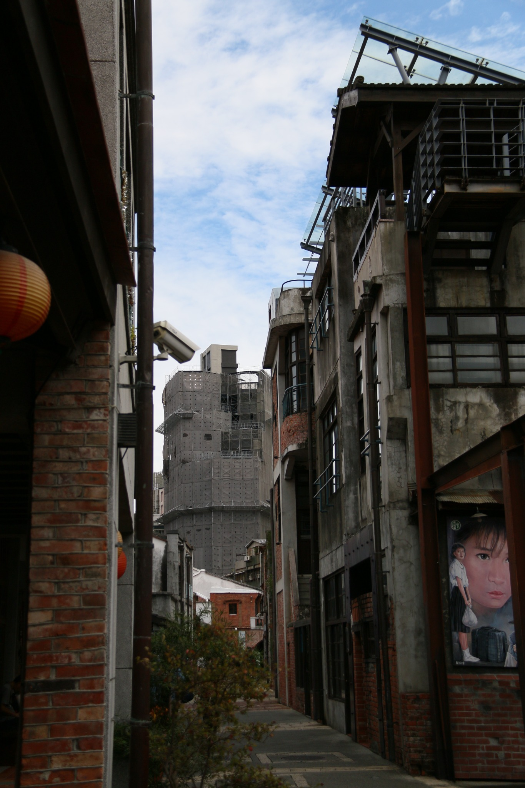
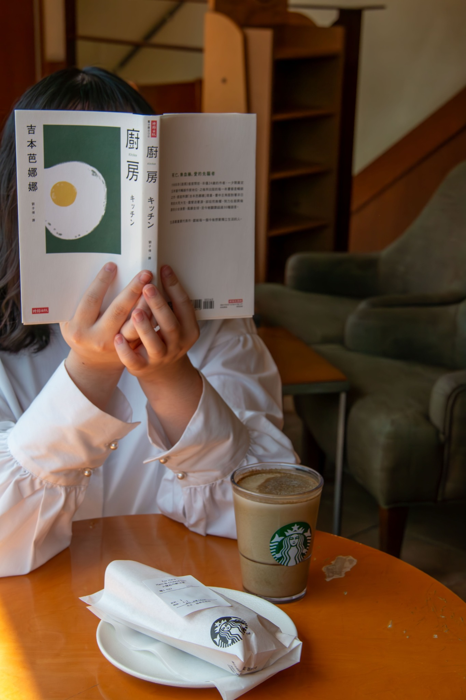
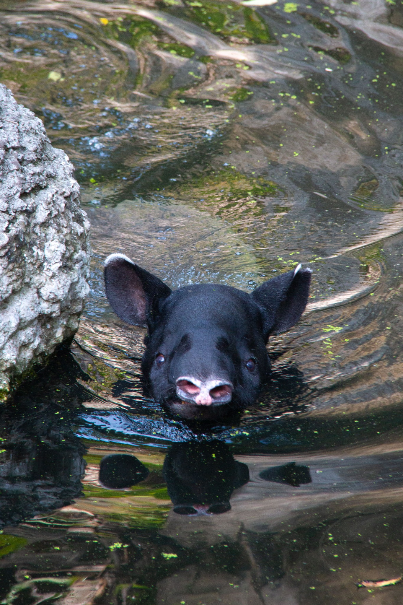

01 / STREET PHOTOGRAPHY
城市巷弄
街道兩側的老建築與藍天，留下城市一隅的光景。
我是 Sammi，目前就讀國立政治大學廣告學系。我喜歡攝影，享受用鏡頭捕捉日常的畫面，也對廣告與視覺傳達充滿好奇。這個網站記錄我的學習與創作。

街道兩側的老建築與藍天，留下城市一隅的光景。

咖啡、書頁與暖色光線，收藏日常生活的片刻。

在水面與倒影之間，捕捉動物好奇的神情。
想分享攝影心得或交流創作想法？歡迎與我聯絡。